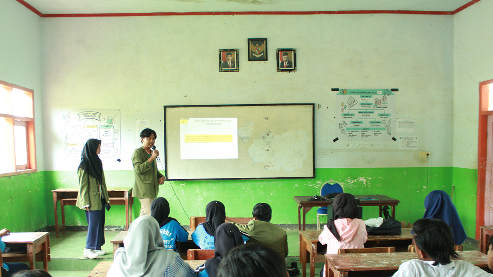
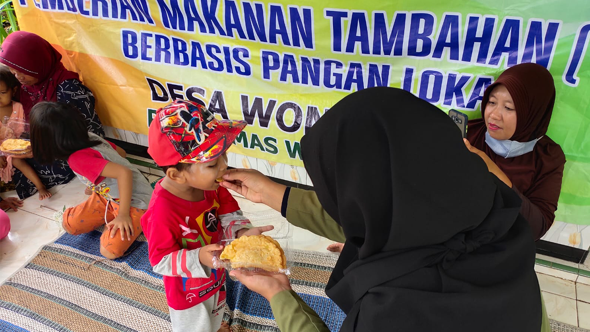
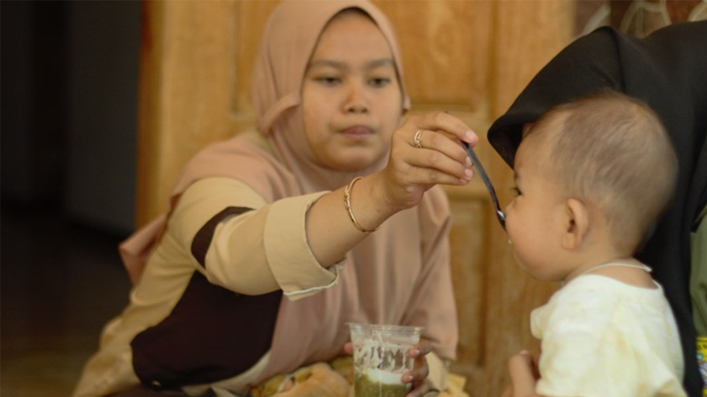
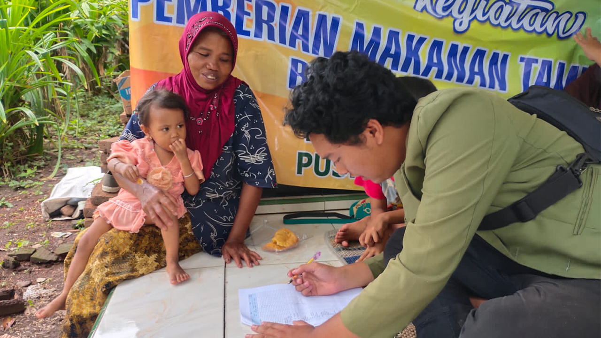

Kegiatan KKN

Sosialisasi Pendewasaan Usia Pernikahan
Sosialisasi dilaksanakan di SMPN 4 Wonomerto Satu Atap dengan audiens siswa/i kelas 7,8 dan 9

Sosialisasi Pola Hidup Bersih Sehat
Sosialisasi dilaksanakan di SDN Wonorejo 1 dan SDN Wonorejo 2 dengan audiens siswa/i kelas 1 dan 2

Pembagian PMT Lokal
Turut serta membantu kader posyandu dalam membagikan PMT Lokal

PMT di Desa Wonorejo
Membantu kader posyandu dalam pembagian PMT saat melakukan kegiatan posyandu

Melaksanakan Kegiatan Survey Pangan Baduta
Melakukan survey pangan yang sering dikonsumsi dengan narasumber ibu dari baduta